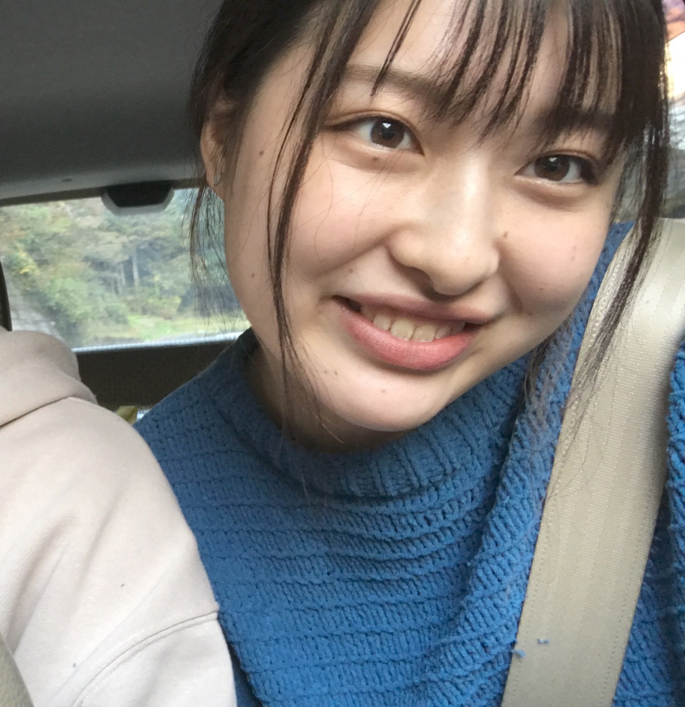

髙橋風香
生年月日：1999年7月17日
血液型：O型
出身地：群馬県高崎市
大学：長野大学 環境ツーリズム学部 環境ツーリズム学科
生年月日：1999年7月17日
血液型：O型
出身地：群馬県高崎市
大学：長野大学 環境ツーリズム学部 環境ツーリズム学科
私は、体育会系のバスケットボール部に所属しています。レギュラーになるために人の何倍も努力しました。私は、バスケットボールを通して、これから社会に出て直面する困難を乗り切る力を培ったと思います。
【1】体力の限界まで頑張る根性・・・鬼の練習で、強靭な体力と精神的タフさを身に付けました。どんなに苦しい時でもくじけず頑張り通します。
【2】勝つための戦略的思考・・・自分のチームのライバルの戦略分析を行いました。また、勝つために明確な目的意識を持ちました。
【3】上下関係の礼儀・・・チームを一つにまとめるために上下関係の規律を守りました。
→私は、辛いことやきつい仕事があっても、最後まで投げ出さず、頑張り抜く自信があります。未経験ですが、コツコツ努力をし、技術を武器に成長し続けるSEになります！
私は、ゼミナールで地域の人々と一緒に地域資源を活かした商品開発や市民事業の立ち上げによる地域マネジメントについて実践的に学んでいます。その中でも私は、信州伝統野菜山口大根の後継者不足・認知度向上・需要拡大をテーマに、地域の人々や一般企業と連携し、山口大根の漬物の商品化に取り組んでいます。特に、パッケージに力を入れ、QRコードを記載するという新しい発想をしました。誰にも思いつかないようなアイデアを生み出す発想力を活かして、貴社に貢献したいと思います。
特技は、バスケットボールです。小学校5年生から始め、大学でもバスケットボール部に所属しています。また、高校ではキャプテンを経験しました。その中で、自分のことは後回しにして、皆のために尽くすということを学びました。学んだことを社会に出てからも忘れず、後輩ができた際に活かしていきたいと思います。 趣味は、ファッションです。特に、大人カジュアルなスタイルが好きで着ています。その際に気を付けていることは、自分の骨格にあったファッションをすることです。スタイルをよく見せることができるため、常に意識するようにしています。
長所は、バスケットボールで身に付けた忍耐力です。私は、辛いことやきつい練習があっても「めげない・逃げない・投げ出さない」をモットーに頑張ってきました。そのため、何があっても投げ出さず最後までやり遂げることがで出来ます。 短所は、不器用なことです。不器用なため、何かを覚える際には人の倍時間がかかります。しかし、私は自分の短所を受け止め、ポジティブに捉えようと考えました。すらすらと物事が上手くいっても、何故上手くいったのかすぐに忘れてしまいます。覚えが悪いからこそ身体にしみこむまで、繰り返し努力できると短所をポジティブに捉えるようにしています。
私が大事だと思う心構えは、「後ろを見ない」です。これから社会に出て色々な失敗をすると思います。ミスをして落ち込む暇があったら、すぐに「次はこうする」と決めて、次の仕事に取りかかることが大切だと思います。若い時は、たくさんやり直して勉強することが大事だと思いますし、何事も前を見続ける人が社会に出て活躍する人材だと私は思います。